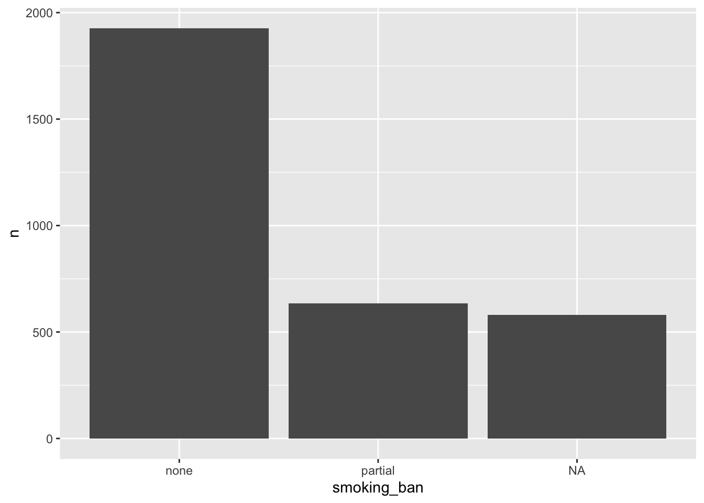
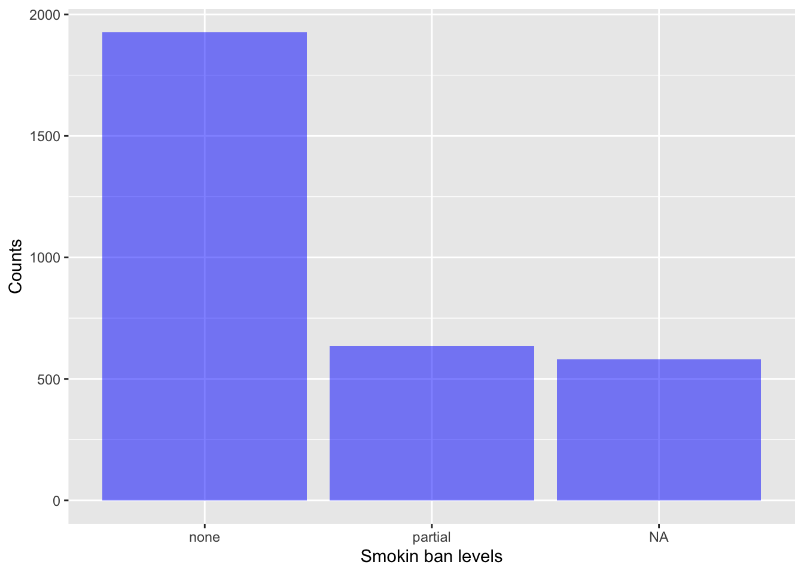
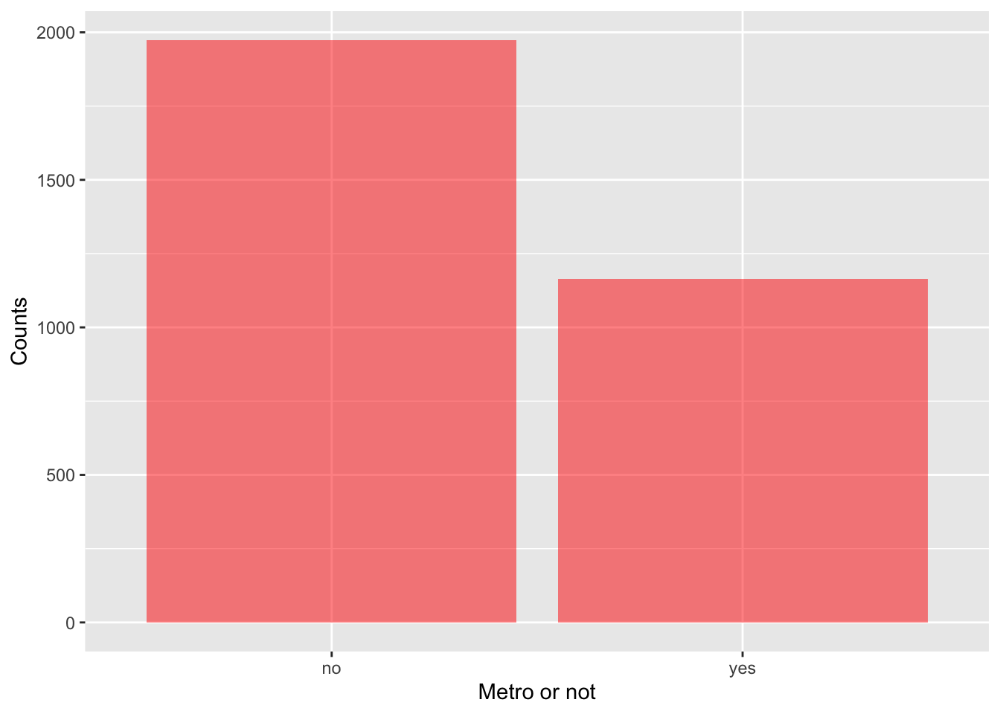

# load from R data fileload("county.rda")# reading from CSVcounty2 =read_csv('county.csv')
Rows: 3142 Columns: 15
── Column specification ────────────────────────────────────────────────────────
Delimiter: ","
chr (5): name, state, metro, median_edu, smoking_ban
dbl (10): pop2000, pop2010, pop2017, pop_change, poverty, homeownership, mul...
ℹ Use `spec()` to retrieve the full column specification for this data.
ℹ Specify the column types or set `show_col_types = FALSE` to quiet this message.
We can count frequencies (numerical summary) of each level in categorical variables.
# how many counties has no smoking ban? some smoking ban?county %>%count(smoking_ban)
# A tibble: 3 × 2
smoking_ban n
<fct> <int>
1 none 1927
2 partial 635
3 <NA> 580
# how many counties has a metropolitan city in it?county %>%count(metro)
# A tibble: 3 × 2
metro n
<fct> <int>
1 no 1974
2 yes 1165
3 <NA> 3
Display bar-plots for categorical variables above.
# how many counties has no smoking ban? some smoking ban?county %>%count(smoking_ban) %>%ggplot(aes(x = smoking_ban, y = n)) +geom_col()

We can fill it with any color, change coordinate labels and even opaqueness.
# how many counties has no smoking ban? some smoking ban?county %>%count(smoking_ban) %>%ggplot(aes(x = smoking_ban, y = n)) +geom_col(fill ='blue', alpha =0.5) +xlab('Smokin ban levels') +ylab('Counts')

Let’s do this again for metro feature, but this time, lets drop rows with NAs.
county %>%count(metro) %>%drop_na() %>%ggplot(aes(x = metro, y = n)) +geom_col(fill ='red', alpha =0.5) +xlab('Metro or not') +ylab('Counts')

What if we would like to understand relationship between two categorical variables? Numerical summary.
county %>%count(metro, smoking_ban)
# A tibble: 8 × 3
metro smoking_ban n
<fct> <fct> <int>
1 no none 1202
2 no partial 413
3 no <NA> 359
4 yes none 723
5 yes partial 222
6 yes <NA> 220
7 <NA> none 2
8 <NA> <NA> 1
Drop NAs, and do it again.
county %>%drop_na() %>%count(metro, smoking_ban)
# A tibble: 4 × 3
metro smoking_ban n
<fct> <fct> <int>
1 no none 1202
2 no partial 413
3 yes none 723
4 yes partial 222
What about numerical variables? First, numerical summaries.
# quartiles and meancounty %>%pull(poverty) %>%summary()
Min. 1st Qu. Median Mean 3rd Qu. Max. NA's
2.40 11.30 15.20 15.97 19.40 52.00 2